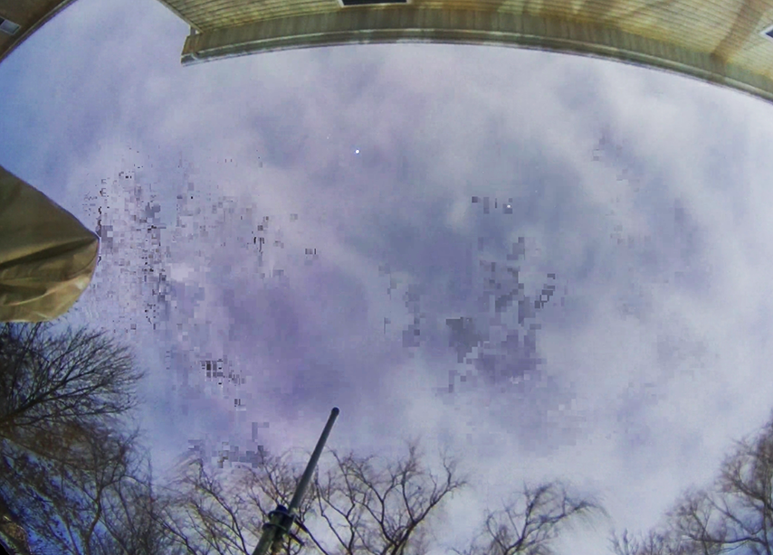

Timelapse video creation can fail or result in poor quality videos for a number of reasons. The steps below, which apply to both the daily- and mini-timelapse, will almost always fix it.
Timelapse video is not created
First make sure the timelapse is enabled. In the Timelapse Settings section of the WebUI's Allsky Settings page, check that Generate setting for a Daily Timlapse is enabled; for a mini-timelapse, make sure Number of Images is not 0.
If the timelapse is enabled you should see a message in /var/log/allsky.log like this:
*** timelapse.sh: ERROR: ffmpeg failed.(
ffmpeg is the command that actually creates the video.)
See if one of the first lines in the error message is either:
/home/pi/allsky/scripts/timelapse.sh: line 294: 6546 Killed ffmpeg -y -f image2 -loglevel ...OR
x264 [error]: malloc of size 38600544 failed
These errors are almost always caused by not enough RAM memory and swap space, or by having a large camera sensor (e.g., the RPi HQ).
To fix, do the following:
- Decide if you need a full-resolution video. Most monitors only display High Definition (HD) which is 1920 x 1080 pixels. If your sensor size is larger than that you can decrease the timelapse Width and Height settings to 1920 by 1080, adjusted for the aspect ratio of your sensor. Decreasing these values will also make the video file smaller. Even if your monitor can display higher resolution than HD, do other people who will view your video have monitors that can? If this doesn't solve your problem, do the steps below.
- If you saw the
Killed ffmpeg ...error increase swap space (or buy a Pi with more memory). The Linux kernel will kill any process that is taking "too much" memory to avoid system issues. Click here for details on how to increase swap. - Install
htopviasudo apt install htop. It's great for checkingffmpeg's memory use. Runhtopin one terminal while runninggenerateForDay.sh --timelapse DATEin another terminal to check onffmpeg's memory use.
If the number in the "VIRT" (virtual memory) column ofhtophits a maximum of around 2900M and the timelapse fails, adding swap space will unlikely fix the issue so you'll need to try one of the other workarounds. - The
malloc of size ...error is often caused by using a high resolution camera. The default video codec (VCODEC) setting is libx264 which has a stated maximum resolution of 4096 x 2304. However, the RPi HQ, ZWO ASI183, and other cameras have resolutions higher than that. If you saw themallocerror do one of the following:- Decrease the timelapse Width and Height settings.
- Set the VCODEC setting to libx265 and set timelapse Extra Parameters to -x265-params crf=30. This video codec takes a long time to create a video (over 3 hours on a PI 4b with 1500 RPi HQ images versus about 15 minutes with libx264). Lower crf numbers (a measure of file compression) mean larger, higher-quality videos. Note that small changes to the number can result in huge difference in file size, for example, going from crf=30 to crf=25 can increase the video size by over five times.
Timelapse video is poor quality and/or "blocky"
If your timelapse videos have poor quality, typically more noticable in fast-moving areas like clouds, and/or the videos are "blocky", as seen in the image blow, try the steps below.
A timelapse video made up of 1000 images, each one 2 MB, isn't 2000 MB (2 GB) in size. Instead, the software reduces the file size in various ways, which also reduces the quality of the video. However, you have control over how much the video quality is reduced.
The key is to find a happy medium between quality and size.

- If you have a high-resolution camera like the RPi HQ (4056 x 3040 pixels)
or many ZWO cameras, try decreasing the resolution of the video.
Many people have "High Definition" monitors with a width of 1920 pixels,
so you can probably reduce your video without anyone noticing.
Using half the camera's resolution is a good place to start
(2028 x 1520 for the RPi HQ).
Make sure to reduce the width and height by the same percent,
not the same number.
Decreasing resolution also decreases timelapse creation failures, speeds up processing, and results in faster uploads and less disk space used.
There are two ways to reduce the resolution.- Decrease the resolution of each image.
Decrease the Image Resize Width and Image Resize Height in the Post Capture Settings section of the WebUI.
Note that decreasing the image resolution may make the images in the WebUI and in an Allsky Website appear smaller. It will also reduce that amount you can "zoom in" to the images. - Decrease the resolution of only the timelapse video.
Decrease the timelapse Width and Height in the Timelapse Settings section of the WebUI. This has no impact on the resolution of each individual image. - Add a Video Coding Level to the timelapse Extra Parameters setting. Start with -level 3.1; if that doesn't help enough try level 3.2, 4, 4.1, or 4.2. Higher levels may also work but have not been tested.
- Increase the Bitrate.
This setting determines how much data is included in the video,
and hence, how much data is left out.
The more data that's left out, the smaller the file is.
The default is around 5000 kilobits/second (5 Mb/second) and is typically sufficient. Increasing the value too high, e.g., 25000 (25 Mb/second) could cause problems viewing the video - not all network connections and devices can support that speed and you may get pauses.
- Decrease the resolution of each image.
Timelapse video doesn't have the correct number of images
The number of images (also called "frames") in a timelapse video is
the number of seconds long it is (including fractions of a second) times the
Frames Per Second (FPS) you set.
Execute the following to determine how many frames are in a video file as
well as the length in seconds.
Ignore the fps number,
and replace YOUR_FILE with the name of your video:
ffmpeg -i YOUR_FILE -vcodec copy -f rawvideo -y /dev/null 2>&1 | tail -2
One cause for videos that are too short is zero-length files.
Apparently when ffmpeg encounters a zero-length file it quits.
To remove zero-length files for a specified day, do the following,
replacing "DATE" with the name of a directory in ~/allsky/images:
removeBadImages.sh DATEIt will take a while to run. When it's done you can re-create the timelapse by executing:
generateForDay.sh --timelapse DATE
"deprecated pixel format used, make sure you did set range correctly"
You can safely ignore this message.